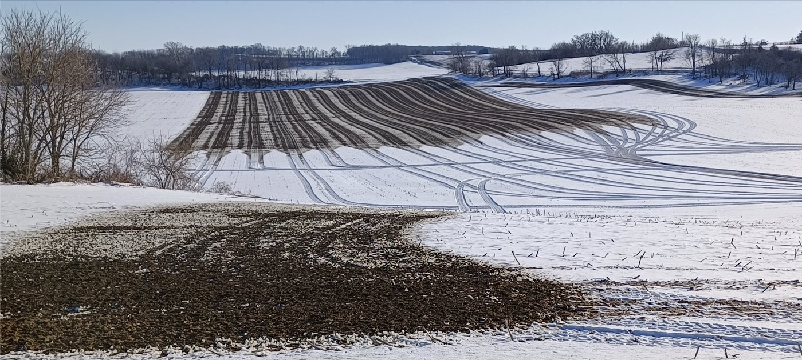
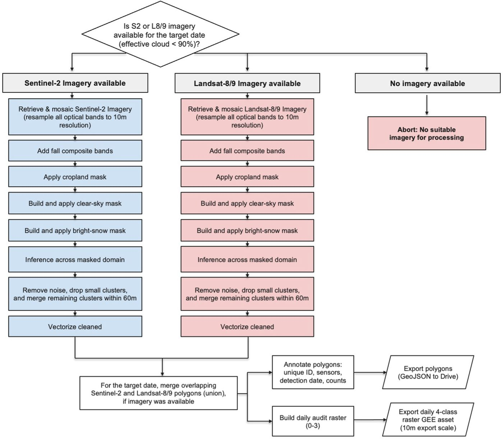
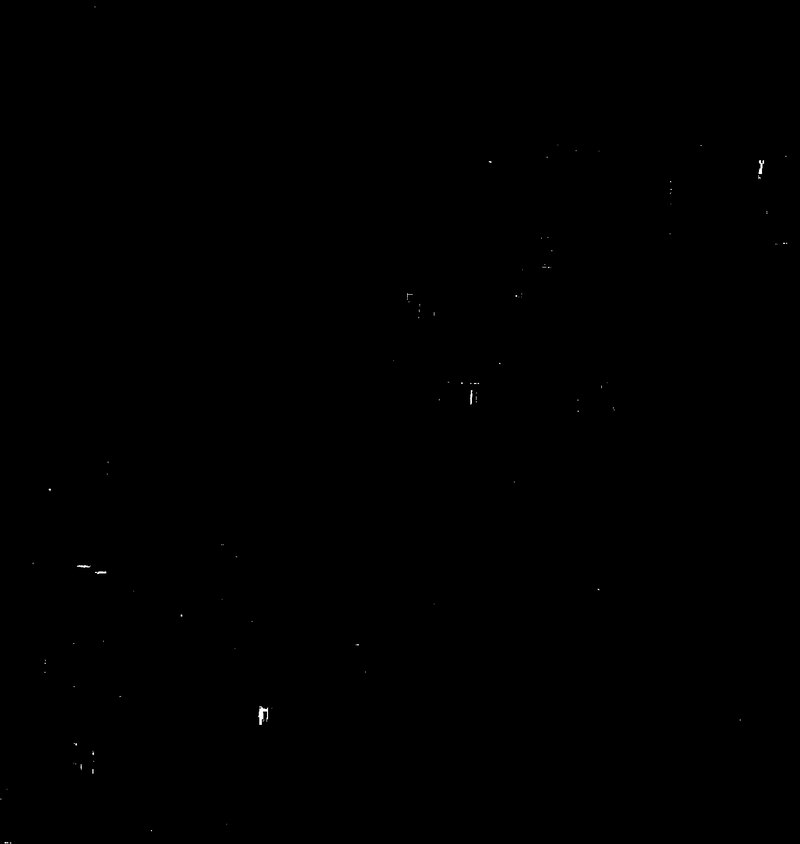
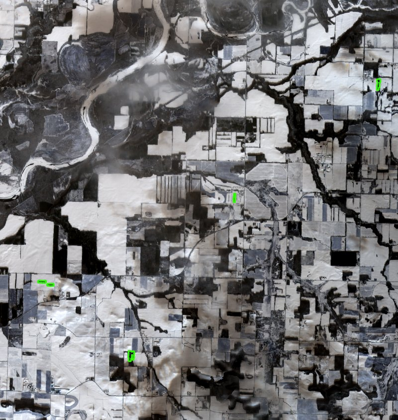
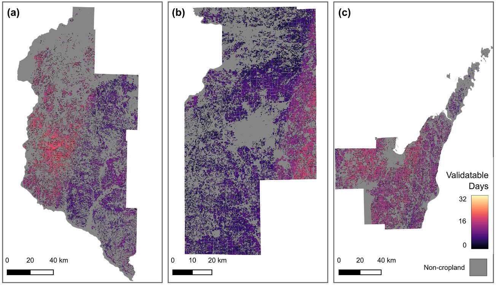

Manure Spotter
Spreading livestock waste on frozen or snow-covered ground is one of the highest-risk moments in the agricultural calendar for water quality: frozen soils block infiltration, dormant crops take up little of the nutrients, and snowmelt can carry manure straight into streams and wells. Yet no free tool existed to let regulators, nonprofits, or citizens actually watch for it. Enforcement mostly relied on the operations reporting on themselves.

Manure Spotter is my answer to that gap—an open, reproducible workflow in Google Earth Engine that maps waste applications on snow using freely available Sentinel-2 and Landsat-8/9 imagery. It was built and validated across three Wisconsin regions during the January–February 2025 spreading season and published in Remote Sensing Applications: Society and Environment.
How it works
For each target date, the workflow pulls whatever Sentinel-2 or Landsat-8/9 imagery is available and first masks out everything it shouldn’t judge—clouds and cloud shadow, snow-free ground, and non-cropland—so the classifier only ever considers pixels where a spread could plausibly be seen. Only then does it classify the surface, and finally clean and vectorize the flagged pixels into discrete, dated “spread” polygons, merging overlapping detections and dropping noise—alongside an audit raster and optional image chips an investigator can eyeball before a site visit. The full daily logic looks like this:

At the heart of that pipeline is the classification step. Within the masked, observable area, the model distinguishes the spectral signature of freshly applied waste from the surrounding snow, flagging candidate manure one pixel at a time—then step-by-step rules turn those pixels into the discrete spreads an investigator can act on.


Results
Within the observable domain, the classifier achieved high precision (0.990, 95% CI 0.977–1.000) and recall (0.942, 95% CI 0.934–0.949) for the livestock-waste class, measured with a rigorous design-based, pixel-day accuracy assessment. Just as important, the workflow is honest about when it can see: it tracks how many days each area is actually “validatable” given clouds and snow, rather than pretending to full coverage.

Why it matters
The outputs are designed for real use: vectorized spread polygons and image chips that support complaint triage and targeted site visits, built entirely on free imagery and open code so that a state agency or a small watershed nonprofit could run it without a satellite budget. It’s a concrete example of what I care about most—turning public data into a tool that lets people hold environmental risks up to the light.